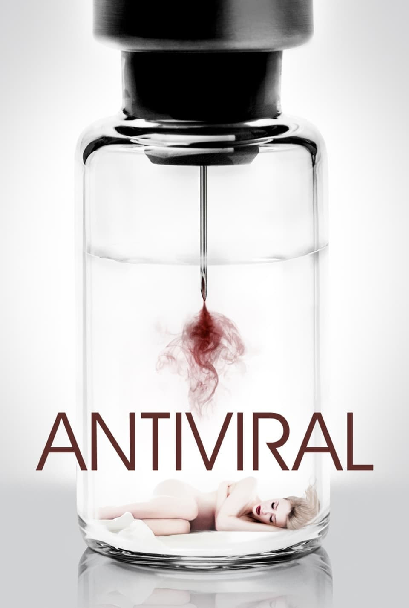
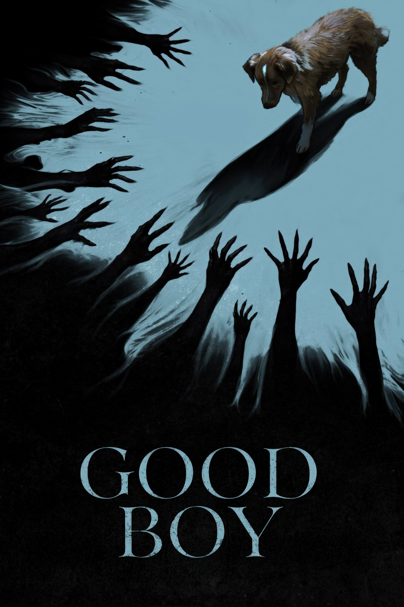
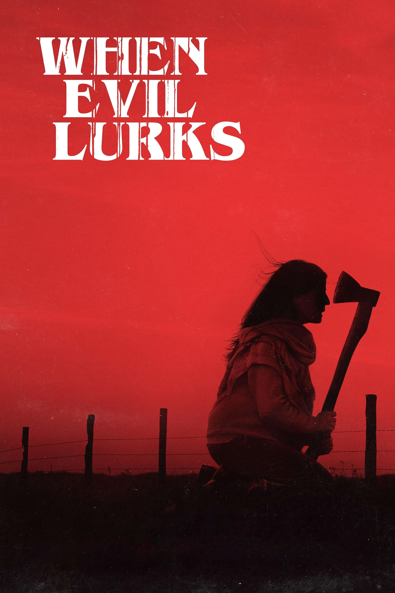
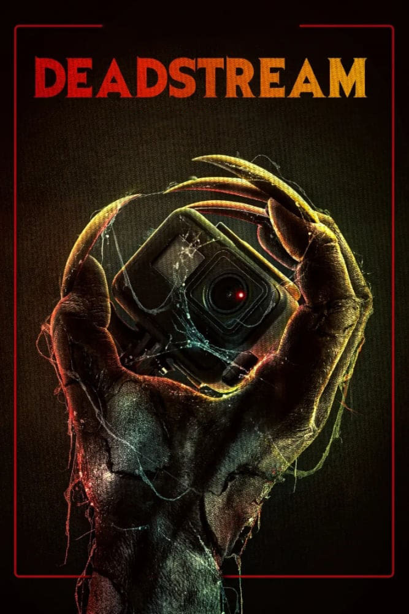
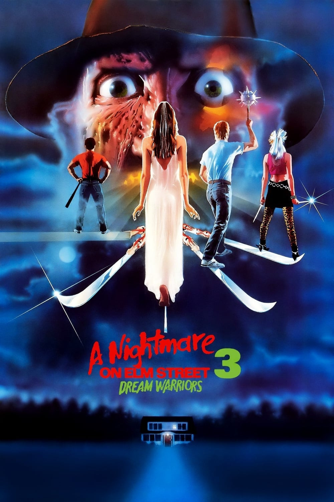
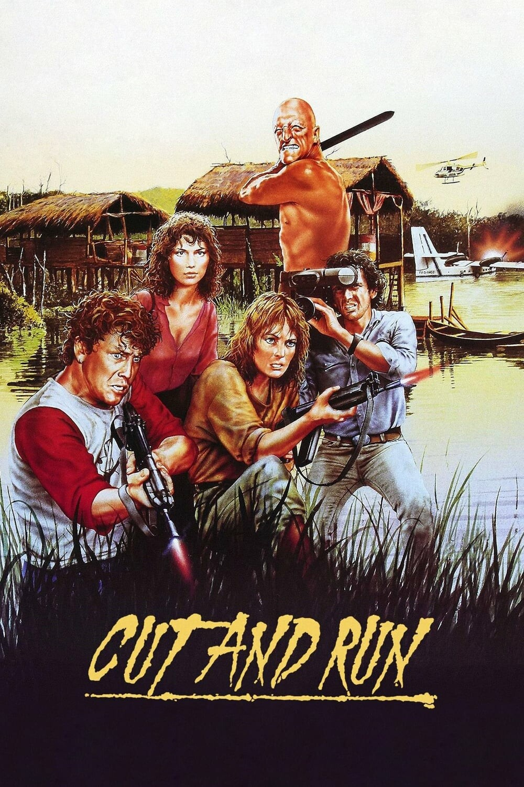
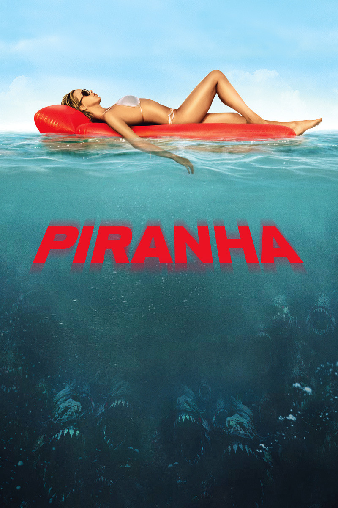
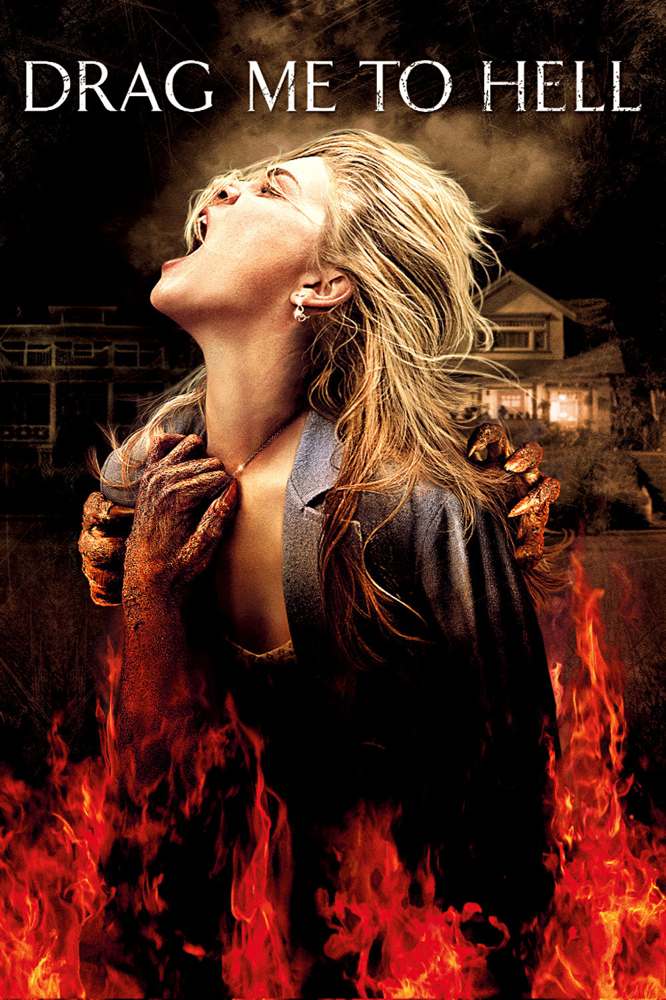
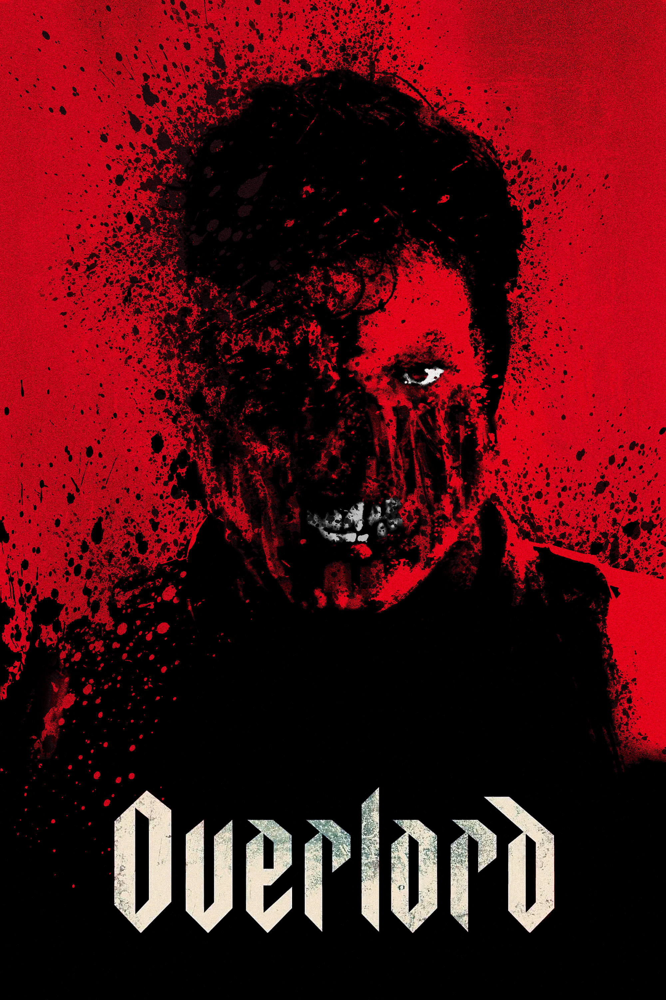

RÉTROSPECTIVE
CES FILMS D'HORREUR
À DÉCOUVRIR
Parce qu'il n'y a pas que Saw dans la vie.
Parce qu'il n'y a pas que Saw dans la vie.
L'horreur est peut-être le genre cinématographique le plus mal-aimé — et pourtant le plus riche.
Sous les jump scares et les effusions de sang se cachent souvent des œuvres qui parlent de peur, de société, d'identité, de deuil. Des films qui utilisent le fantastique comme loupe grossissante sur le monde réel — et qui n'ont rien à envier aux drames les plus sérieux.
Voici neuf films qui méritent d'être vus, connus, défendus — et qui prouvent que le cinéma d'horreur peut être, lui aussi, du grand art.

Le fils de David Cronenberg signe un premier film d'une cohérence troublante. Dans un futur proche, des cliniques vendent des virus prélevés sur des célébrités à des fans obsessionnels. Une métaphore sur la culture du culte de la personnalité qui ne fait que gagner en pertinence.
Visuellement froid, clinique, presque insupportable — exactement comme il se doit. Brandon Cronenberg n'imite pas son père, il prolonge une obsession familiale pour le corps comme territoire politique.

Une jeune femme rencontre un homme séduisant. Son animal de compagnie est un homme en costume de chien. Good Boy joue avec le malaise et l'absurde avec une maîtrise désarmante pour un premier film. Le genre est utilisé comme loupe grossissante sur des dynamiques de pouvoir très réelles.
Le film norvégien est court, efficace, et laisse une impression durable — celle d'avoir vu quelque chose qu'on n'avait jamais vu avant.

L'Argentin Demián Rugna signe le film de possession le plus brutal et le plus inventif depuis des années. When Evil Lurks refuse absolument toutes les conventions du genre — pas d'exorcisme, pas de prêtre, pas de rédemption. Juste une contagion inexorable et une terreur sans fond.
La logique interne du film est implacable : les règles du mal sont clairement posées, puis violées une à une par des personnages que la peur rend stupides. C'est du grand horreur.

Un YouTubeur en disgrâce passe une nuit dans une maison hantée pour regagner ses abonnés. Le found footage semblait mort — Deadstream le ressuscite avec une énergie et un humour dévastateurs. C'est Raimi qui aurait grandi avec YouTube.
Le film est tourné pour presque rien par un couple de cinéastes indépendants, et c'est précisément cette liberté qui lui donne sa folie. Terriblement efficace.

La meilleure suite de la franchise Freddy, et l'un des meilleurs films de la décennie. Dream Warriors élargit la mythologie de Krueger tout en gardant intacte la terreur originelle. Les effets pratiques sont d'une inventivité absolue — chaque mort est une œuvre d'art morbide.
C'est aussi le film qui donne aux victimes une agentivité : ils ne fuient plus, ils se battent. Un changement de paradigme qui rend le film aussi enthousiasmant qu'effrayant.

Ruggero Deodato revient dans la jungle pour un film qui n'a rien à envier à ses œuvres les plus connues. Cut and Run est un survival tendu, brutal, et étonnamment bien construit. Le film cache sous ses atours de série B une critique acerbe du journalisme et du colonialisme.
À redécouvrir loin des préjugés qui entourent le cinéma d'exploitation italien. C'est du cinéma populaire qui ne manque ni d'ambition ni de mordant.

Alexandre Aja signe le meilleur film de piranha jamais réalisé — ce qui n'est peut-être pas un concours très relevé, mais qu'importe. Piranha 3D est un délice de cinéma bis assumé, généreux, complètement décomplexé.
Le film ne se prend jamais au sérieux, et c'est précisément pour ça qu'il fonctionne aussi bien. Un casting improbable, des effets sanglants jubilatoires, et un sens de la démesure qui ferait rougir James Cameron.

Sam Raimi retrouve ses racines avec une jubilation communicative. Jusqu'en enfer est une ode au cinéma d'horreur populaire — une rollercoaster de gags sanguinolents et de frayeurs sincères. C'est le film le plus fun de sa carrière depuis Evil Dead 2.
Alison Lohman est parfaite dans ce rôle ingrat de jeune femme poursuivie par une malédiction tzigane. Raimi n'a rien perdu de sa capacité à rendre le grotesque irrésistiblement plaisant.

Des soldats alliés parachutés en Normandie découvrent que les nazis expérimentent sur les morts. Le pitch est dément — l'exécution est irréprochable. Overlord est un film de genre d'une efficacité redoutable, qui prend son sujet au sérieux sans jamais se départir de son énergie de série B de luxe.
L'ouverture — une séquence de saut en parachute sous les bombes — est l'une des plus impressionnantes de la décennie. Julius Avery s'impose d'emblée comme un cinéaste à suivre.